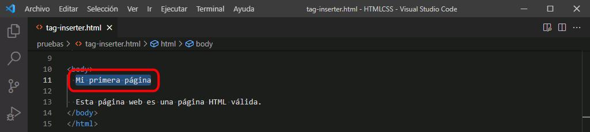
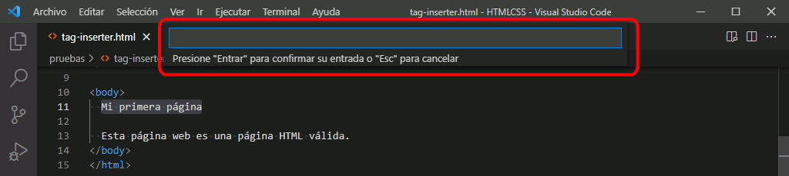
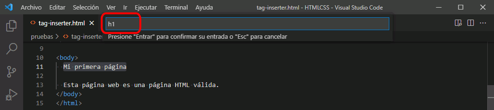
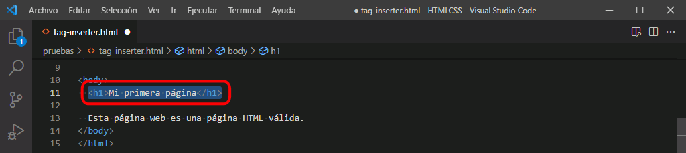
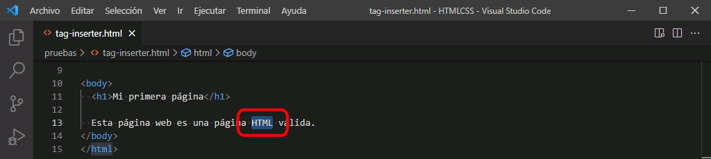
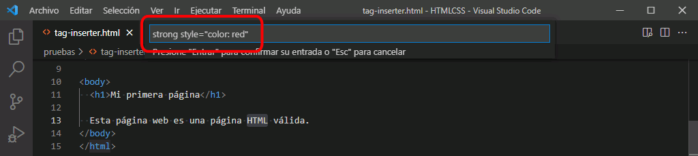
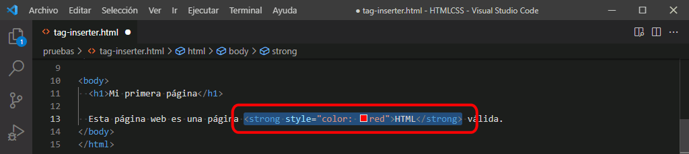
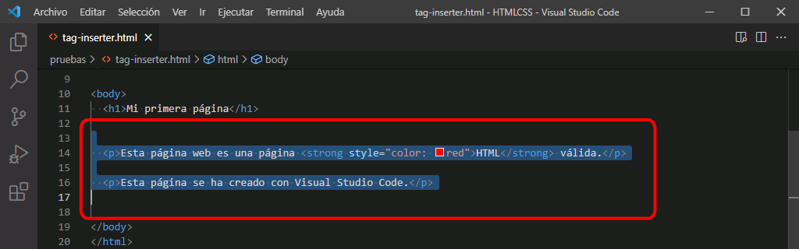
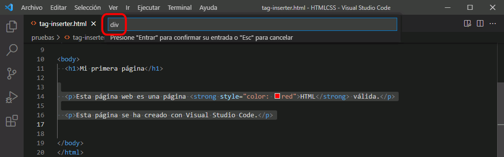

Extensión Tag Inserter: Inserción de etiquetas
La información sobre esta extensión se encuentra en la lección Configuración recomendada para el curso Páginas web HTML y hojas de estilo CSS.
Esta etiqueta permite añadir etiquetas a un bloque de texto. En este curso utilizaremos esta extensión para realizar los ejercicios, en los que se proporciona el texto de la página web sin etiquetas.
El procedimiento es el siguiente:
- Seleccione el texto alrededor del cual quiere añadir una etiqueta:

- Escriba el atajo de teclado Alt+Shift+i y se abrirá una ventana en la parte superior:

- Escriba en la ventana la etiqueta deseada (sin escribir desigualdades < >):

- La etiqueta se añadirá alrededor del texto seleccionado:

Tag Inserter permite añadir etiquetas con atributos:
- Seleccione el texto alrededor del cual quiere añadir una etiqueta:

- Escriba el atajo de teclado Alt+Shift+i y en ventana superior escriba la etiqueta y su atributo (sin escribir desigualdades < >):

- La etiqueta se añadirá alrededor del texto seleccionado:

Tag Inserter permite añadir etiquetas que agrupen varios elementos:
- Seleccione el texto alrededor del cual quiere añadir una etiqueta:

- Escriba el atajo de teclado Alt+Shift+i y en ventana superior escriba la etiqueta y su atributo (sin escribir desigualdades < >):

- La etiqueta se añadirá alrededor del texto seleccionado: